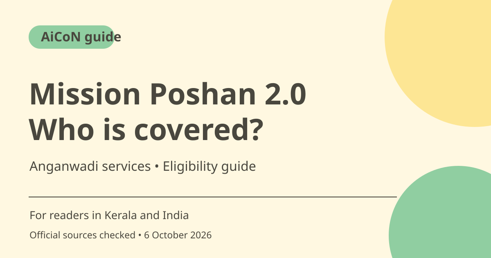

Poshan 2.0: Anganwadi nutrition support and eligibility
Mission Saksham Anganwadi and Poshan 2.0 supports nutrition and early childhood services through Anganwadi centres. Children, pregnant women and lactating mothers are key groups. Adolescent-girl coverage has geographic limits, so check eligibility locally.

What is Mission Poshan 2.0?
The scheme brings Anganwadi services, Poshan Abhiyaan and the Scheme for Adolescent Girls under a wider nutrition and early-childhood programme. The official institute overview says the Centre handles policy and planning while state governments handle day-to-day implementation. This is a service and nutrition programme, not a universal cash payment.
Who is covered?
The programme covers children below six, pregnant women and lactating mothers, with different services for different stages. Scheme guidelines describe supplementary nutrition for children from six months to six years. Early childhood care includes stimulation for younger children and preschool education for ages three to six. Do not assume every beneficiary receives the same package.
The adolescent-girl rule is narrower
The Scheme for Adolescent Girls covers ages 14 to 18 in Aspirational Districts of states and all districts of the Northeast Region. That is not blanket coverage for every adolescent girl in India or Kerala. Ask the local Anganwadi worker whether the relevant component operates in your district and whether you qualify. This article does not invent a Kerala district list.
What services are available?
The official overview lists supplementary nutrition, preschool non-formal education, nutrition and health education, immunisation, health checks and referral services. Immunisation, health checks and referrals are provided through public-health infrastructure. Guidelines distinguish take-home ration for relevant groups from hot cooked meals and morning snacks for registered children aged three to six. Confirm your centre's actual arrangement.
Registration and Aadhaar
The guidelines say beneficiaries should be registered at the nearest Anganwadi centre. They say a child's own Aadhaar is not mandatory for scheme benefits and the mother's Aadhaar can be used. They also provide for help obtaining Aadhaar where a beneficiary does not have it. Ask the worker what documents and assistance apply, rather than assuming an online form is the only route.
Why Poshan Tracker is not a public cash-claim link
Poshan Tracker supports monitoring of centres and beneficiaries. Opening its website is not proof of enrolment and does not create an entitlement to cash. For a family in Kerala, the useful first step is a conversation with the local Anganwadi worker. Keep nutrition support separate from other schemes with their own financial benefits.
How to use it, step by step
- Contact the nearest Anganwadi centre and explain whether the request is for a child, pregnancy, lactation or an adolescent girl.
- Ask which services apply to the person's age and circumstances. For adolescent girls, confirm district eligibility first.
- Ask the worker about registration, identity documents and Aadhaar assistance. For a child, ask about the guideline allowing the mother's Aadhaar.
- Have registration completed through the centre's authorised process. Do not pay a stranger offering a guaranteed online benefit.
- Ask about the food or ration arrangement, distribution schedule, preschool timing and health-service contacts relevant to you.
- If moving temporarily, tell the worker about any existing registration. Guidelines provide for migration between centres through Poshan Tracker.
- For missed services or unresolved registration, ask the centre or its supervisor which local office can address the issue. Keep documents and communications private.
Cost, eligibility and limits
| Nature of support | Nutrition and related services for eligible registered beneficiaries, not a promised cash grant. |
|---|---|
| Children | Programme coverage below six; supplementary nutrition described for six months to six years. Services vary by stage. |
| Adolescent girls | Ages 14-18 in Aspirational Districts and all Northeast districts. Not nationwide unrestricted coverage. |
| Local access | States implement services. Confirm enrolment and schedules at the Anganwadi centre; no private paid agent is needed. |
Frequently asked questions
Can I claim cash on Poshan Tracker?
The checked sources describe nutrition and monitoring services, not a general cash-claim portal.
Does my child need their own Aadhaar?
The guidelines say a child's Aadhaar is not mandatory and benefits can use the mother's Aadhaar. Ask the centre about the registration process.
Are all girls aged 14-18 covered?
No. The adolescent component is geographically limited to the specified areas.
Official sources
Checked 6 October 2026. Features and prices can change. This is a guide, not a personal product test.